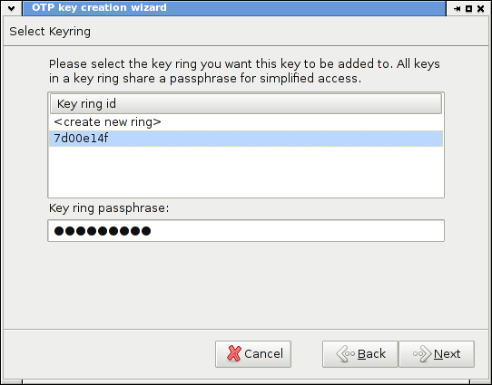

OTPmail
Download latest version:
Download source as:
This project is maintained by COeins
OTPmail
One Time Pad based mail encryption for Thunderbird
About
The goal of OTPmail is providing a simple user interface for mail encryption via the One Time Pad. The encryption itself is not done by the extension but, similar to the widely known combination GnuPG/Enigmail, handled by an external module. The project is currently in an early beta phase. Feel free to install and test it, but don't rely on it in productive scenarios.
Installation
To install and use OTPmail, you will need:
- Mozilla Thunderbird (versions 10 and up should work)
- Java Runtime Environment (versions 6 or up)
- otp.jar encryption module (most recent version)
- OTPmail.xpi (most recent version; select 'Save Link As' to download)
To add the Extension to Thunderbird, select 'Add Add-On From File' from the add-on screen and choose the downloaded otpmail.xpi.
Usage
Once Thundrbird is restarted, the OTPmail settings window is displayed, where the following paths have to be configured: the location of the otp.jar module, an empty directory to store the key files in, and the location of java (in Windows, this should be something like 'C:\Program Files\Java\bin\java.exe', in Linux '/usr/bin/java').
To establish an encrypted communication with a partner a key has to be generated and shared. This can be done via the OTPmail menu: create a new key, then export it to an mobile storage device and import it on the target pc.
After exchanging a key mails can be encrypted by selecting "Encrypt mail" from the OTPmail menu and toolbar button or by clicking the OTPmail status symbol. Caution: the current version does not yet support encrypting attachments.

Licence
OTPmail can be used or modified under the terms of the Mozilla Public License, v. 2.0.
Parts of the code are based on Enigmail by Patrick Brunschwig and R. Saravanan, which is released under Mozilla Public License, version 1.1 or the GNU General Public License (GPL), version 2.0 or later.
The included module subprocess.jsm by Patrick Brunschwig is released under Mozilla Public License, version 1.1 or the GNU General Public License (GPL), version 2.0 or later or the GNU Lesser General Public License Version 2.1 or later.